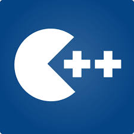

Durante sua fase inicial de desenvolvimento, a linguagem era chamada "novo C", "C84" ou ainda "C com classes".
O termo "C++" é creditado a Rick Mascitti, e foi utilizado pela primeira vez em dezembro de 1983.
O termo é uma referência ao operador de incremento ++, significando um acréscimo (uma evolução) à linguagem C.
Em tom humorado, desenvolvedores de software e especialistas em informática no início da década de 1990 costumavam relacionar o ++ do nome à grande insistência dos programadores em utilizar o C++ da mesma forma que a linguagem C, não usufruindo das novas facilidades que a linguagem poderia fornecer.
Assim como o++ estava sendo aplicado de maneira pós-fixa à letra C, a linguagem C++ era uma evolução do C pós-fixada, que só tornar-se-ia realidade em algum futuro remoto, não naquele momento.
Assim como a linguagem, sua biblioteca padrão também sofreu melhorias ao longo do tempo.
Sua primeira adição foi a
biblioteca de E/S, e posteriormente a Standard Template Library (STL); ambas tornaram-se algumas das principais funcionalidades que
distanciaram a linguagem em relação a C.
Criada primordialmente na HP por Alexander Stepanov no início da década de 1990 para
explorar os potenciais da programação genérica, a STL foi apresentada a um comitê unificado ANSI e ISO em 1993 à convite de Andrew
Koenig.
Após uma proposta formal na reunião do ano seguinte, a biblioteca recebe o aval do comitê.
Depois de anos de trabalho, o mesmo comitê ANSI/ISO padronizou o C++ em 1998 (ISO/IEC 14882:1998).
Após alguns anos foram reportados
defeitos e imprecisões no documento, e uma correção foi lançada em 2003.
Por muito tempo, o C++ foi encarado como um superconjunto do C.
Entretanto, em 1999 o novo padrão ISO para a linguagem C
tornou as duas linguagens ainda mais diferentes entre si.
Devido a essas incompatibilidades, muitas empresas que desenvolvem
compiladores não oferecem suporte à versão mais recente da linguagem C.
Pode-se dizer que C++ foi a única linguagem entre tantas outras que obteve sucesso como uma sucessora à linguagem C, inclusive
servindo de inspiração para outras linguagens como Java, a IDL de CORBA e C?.
Trabalhos futuros
A linguagem continua evoluindo de forma a fornecer novas funcionalidades.
O grupo de desenvolvimento Boost.org trabalha para evoluir a biblioteca padrão, informando o comitê oficial da linguagem das facilidades que possuem maior retorno positivo dos programadores, seja por qualidade ou por utilidade, e quais ainda devem ser desenvolvidas.
Tudo indica que o C++ continuará com sua natureza
multiparadigma.
Por exemplo, o trabalho da Boost.org dedica-se a acrescentar as qualidades da programação funcional e genérica.
O padrão C++ não define a implementação para a definição de nomes e tratamento de exceções, entre outras facilidades específicas, o que frequentemente torna incompatíveis códigos objeto produzidos por diferentes compiladores.
Apesar disso, existem padrões periféricos
específicos para certas plataformas ou sistemas operacionais para padronizar compiladores dessas plataformas, como por exemplo o C++
ABI.
Empresas que Usam a C++
As empresas de desenvolvimento de compiladores ainda se esforçam para suportar inteiramente o padrão, especialmente na área de gabaritos.
Comeau C++
Uma das disputas se refere à palavra reservada export, que permite que a definição de um gabarito seja separada de sua declaração.
O primeiro compilador a implementar export foi o Comeau C++ (imagem) em 2003 (cinco anos após o lançamento do padrão), e no ano seguinte uma versão beta do Borland C++ Builder X também suportava a facilidade.
Interessante notar que ambos os compiladores são baseados na versão EDG do C++.
Muitos livros fornecem exemplos de códigos para implementar exportque não são compiláveis, mas não há referências para o problema mencionado.
Outros compiladores como o Microsoft Visual C++ e o GCC não suportam a facilidade.
O secretário do comitê oficial do C++ Herb Sutter recomendou que a palavra fosse removida de versões futuras do padrão da linguagem,mas após discussão a decisão final foi mantê-la.
Outras disputas relativas a gabaritos se referem à especialização parcial, que foi pouco suportada por muitos anos depois que o C++ padrão foi lançado.
Atualmente a linguagem tem uma nova especificação, conhecida por C++11 e publicada como 14882:2011.

C++ é desenvolvido para ser uma linguagem tipada estaticamente e de propósito geral que é tão eficiente e portátil quanto o C.
C++ é desenvolvido para suportar múltiplos paradigmas.
C++ é desenvolvido para fornecer ao programador escolhas, mesmo que seja possível ao programador escolher a opção errada.
C++ é desenvolvido para ser o mais compatível com C possível, fornecendo transições simples para código C.
C++ evita fornecer facilidades que são específicas a certas plataformas ou a certos grupos de desenvolvedores.
C++ não exige overhead para facilidades que não são utilizadas.
C++ é desenvolvido para ser utilizado mesmo sem um ambiente de desenvolvimento sofisticado.